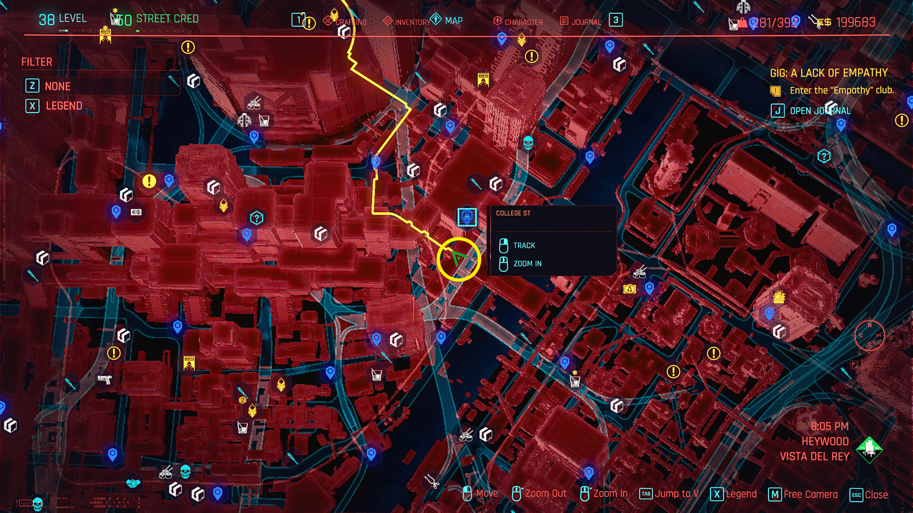

Лучшее оружие в Cyberpunk 2077
Пистолеты
Skippy
Уникальный пистолет с ИИ, способный автоматически наводиться на цель. Идеален для начинающих игроков.
После каждой нейтрализации Скиппи подсчитает, сколько убийств совершил V по сравнению со количеством выведений из строя. Как только количество убийств или выведений из строя достигнет 50, Скиппи начнет диалог. Если количество убийств достигло 50 до выведений из строя, Скиппи навсегда переключится на «Пацифиста, любящего щенков». Если игрок сначала вывел из строя 50 врагов, Скиппи предоставит игроку несколько вариантов выбора. Если выбрано «Убийство — это неправильно», Скиппи останется или изменится на «Пацифиста, любящего щенков». Скиппи изменится или останется на «Хладнокровного убийцу», если выбрано «Я не знаю» или «Я не разговариваю со своим оружием».
Где найти:
Район Vista del Rey, в переулке возле заброшенного здания.
Штурмовые винтовки
Divided We Stand
Легендарная штурмовая винтовка с возможностью поражать до 5 целей одновременно.
Враги, нейтрализованные этим оружием, с вероятностью 6,6% могут взорваться, что накладывает сильный эффект отравления на всех врагов в радиусе 3 метров на 7 секунд, нанося 8% от здоровья цели в секунду в виде химического урона и лишая пораженных врагов возможности совершать двойной прыжок, уклонение, рывок и бег.
Где найти:
Выполните задание "Стычка" в районе Rancho Coronado.
Дробовики
Ba Xing Chong
Мощный дробовик с широким разбросом и высоким уроном по площади.
У Ba Xing Chong есть культовый модификатор, который позволяет ему нацеливаться на 6 врагов. Каждый умный снаряд, выпущенный из этого оружия, взорвется, нанося термический урон всем врагам в радиусе 2,5 м, с высоким шансом ранить и расчленить, а также с небольшим шансом наложить эффект горения.
Где найти:
Награда за выполнение побочного задания "Пропавший без вести".
Советы по использованию оружия
- Регулярно улучшайте оружие у оружейников
- Используйте моды для усиления характеристик
- Подбирайте оружие под свой стиль игры
- Комбинируйте разные типы оружия для максимальной эффективности